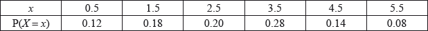

HL Paper 2
A continuous random variable \(X\) has a probability density function given by the function \(f(x)\) , where
\[f(x) = \left\{ {\begin{array}{*{20}{c}}
{k{{\left( {x + 2} \right)}^2},}&{ - 2 \leqslant x < 0} \\
{k,}&{0 \leqslant x \leqslant \frac{4}{3}} \\
{0,}&{{\text{otherwise}}{\text{.}}}
\end{array}} \right.\]
Find the value of \(k\) .
Hence find
(i) the mean of \(X\) ;
(ii) the median of \(X\) .
The events \(A\) and \(B\) are such that \({\text{P}}(A) = 0.65\), \({\text{P}}(B) = 0.48\) and \({\text{P}}(A \cup B) = 0.818\).
Find \({\text{P}}(A \cap B)\).
Hence show that the events \(A\) and \(B\) are independent.
The probability that the 08:00 train will be delayed on a work day (Monday to Friday) is \(\frac{1}{{10}}\). Assuming that delays occur independently,
find the probability that the 08:00 train is delayed exactly twice during any period of five work days;
find the minimum number of work days for which the probability of the 08:00 train being delayed at least once exceeds 90 %.
The weight loss, in kilograms, of people using the slimming regime SLIM3M for a period of three months is modelled by a random variable X. Experimental data showed that 67 % of the individuals using SLIM3M lost up to five kilograms and 12.4 % lost at least seven kilograms. Assuming that X follows a normal distribution, find the expected weight loss of a person who follows the SLIM3M regime for three months.
The random variable X has the distribution \({\text{B}}(30,{\text{ }}p)\) . Given that \({\text{E}}(X) = 10\) , find
the value of p ;
\({\text{P}}(X = 10)\) ;
\({\text{P}}(X \geqslant 15)\) .
The probability density function of a continuous random variable \(X\) is given by
\[f(x) = \left\{ {\begin{array}{*{20}{c}} {0,{\text{ }}x < 0} \\ {\frac{{\sin x}}{4},{\text{ }}0 \le x \le \pi } \\ {a(x - \pi ),{\text{ }}\pi < x \le 2\pi } \\ {0,{\text{ }}2\pi < x} \end{array}.} \right.\]
Sketch the graph \(y = f(x)\).
Find \({\text{P}}(X \le \pi )\).
Show that \(a = \frac{1}{{{\pi ^2}}}\).
Write down the median of \(X\).
Calculate the mean of \(X\).
Calculate the variance of \(X\).
Find \({\text{P}}\left( {\frac{\pi }{2} \le X \le \frac{{3\pi }}{2}} \right)\).
Given that \(\frac{\pi }{2} \le X \le \frac{{3\pi }}{2}\) find the probability that \(\pi \le X \le 2\pi \).
A ski resort finds that the mean number of accidents on any given weekday (Monday to Friday) is 2.2 . The number of accidents can be modelled by a Poisson distribution.
Find the probability that in a certain week (Monday to Friday only)
(i) there are fewer than 12 accidents;
(ii) there are more than 8 accidents, given that there are fewer than 12 accidents.
Due to the increased usage, it is found that the probability of more than 3 accidents in a day at the weekend (Saturday and Sunday) is 0.24.
Assuming a Poisson model,
(i) calculate the mean number of accidents per day at the weekend (Saturday and Sunday);
(ii) calculate the probability that, in the four weekends in February, there will be more than 5 accidents during at least two of the weekends.
It is found that 20 % of skiers having accidents are at least 25 years of age and 40 % are under 18 years of age.
Assuming that the ages of skiers having accidents are normally distributed, find the mean age of skiers having accidents.
The probability density function of a continuous random variable X is given by
\(f(x) = \frac{1}{{1 + {x^4}}}\), \(0\) \(''\) \(x\) \(''\) \(a\) .
Find the value of a .
Find the mean of X .
The length, X metres, of a species of fish has the probability density function
\[f(x) = \left\{ {\begin{array}{*{20}{r}}
{a{x^2},}&{{\text{for }}0 \leqslant x \leqslant 0.5} \\
{0.5a(1 - x),}&{{\text{for }}0.5 \leqslant x \leqslant 1} \\
{0,}&{{\text{otherwise }}{\text{.}}}
\end{array}} \right.\]
Show that a = 9.6.
Sketch the graph of the distribution.
Find \({\text{P}}(X < 0.6)\).
The number of accidents that occur at a large factory can be modelled by a Poisson distribution with a mean of 0.5 accidents per month.
Find the probability that no accidents occur in a given month.
Find the probability that no accidents occur in a given 6 month period.
Find the length of time, in complete months, for which the probability that at least 1 accident occurs is greater than 0.99.
To encourage safety the factory pays a bonus of $1000 into a fund for workers if no accidents occur in any given month, a bonus of $500 if 1 or 2 accidents occur and no bonus if more than 2 accidents occur in the month.
(i) Calculate the expected amount that the company will pay in bonuses each month.
(ii) Find the probability that in a given 3 month period the company pays a total of exactly $2000 in bonuses.
The number of visitors that arrive at a museum every minute can be modelled by a Poisson distribution with mean 2.2.
If the museum is open 6 hours daily, find the expected number of visitors in 1 day.
Find the probability that the number of visitors arriving during an hour exceeds 100.
Find the probability that the number of visitors in each of the 6 hours the museum is open exceeds 100.
The ages of the visitors to the museum can be modelled by a normal distribution with mean \(\mu \) and variance \({\sigma ^2}\) . The records show that 29 % of the visitors are under 35 years of age and 23 % are at least 55 years of age.
Find the values of \(\mu \) and \(\sigma \) .
The ages of the visitors to the museum can be modelled by a normal distribution with mean \(\mu \) and variance \({\sigma ^2}\) . The records show that 29 % of the visitors are under 35 years of age and 23 % are at least 55 years of age.
One day, 100 visitors under 35 years of age come to the museum. Estimate the number of visitors under 50 years of age that were at the museum on that day.
A continuous random variable \(X\) has probability density function \(f\) given by
\(f(x) = \left\{ {\begin{array}{*{20}{l}} {\frac{{{x^2}}}{a} + b,}&{0 \leqslant x \leqslant 4} \\ 0&{{\text{otherwise}}} \end{array}} \right.{\text{where }}a{\text{ and }}b{\text{ are positive constants.}}\)
It is given that \({\text{P}}(X \geqslant 2) = 0.75\).
Eight independent observations of \(X\) are now taken and the random variable \(Y\) is the number of observations such that \(X \geqslant 2\).
Show that \(a = 32\) and \(b = \frac{1}{{12}}\).
Find \({\text{E}}(X)\).
Find \({\text{Var}}(X)\).
Find the median of \(X\).
Find \({\text{E}}(Y)\).
Find \({\text{P}}(Y \geqslant 3)\).
John likes to go sailing every day in July. To help him make a decision on whether it is safe to go sailing he classifies each day in July as windy or calm. Given that a day in July is calm, the probability that the next day is calm is 0.9. Given that a day in July is windy, the probability that the next day is calm is 0.3. The weather forecast for the 1st July predicts that the probability that it will be calm is 0.8.
Draw a tree diagram to represent this information for the first three days of July.
Find the probability that the 3rd July is calm.
Find the probability that the 1st July was calm given that the 3rd July is windy.
Consider the data set \(\{ k - 2,{\text{ }}k,{\text{ }}k + 1,{\text{ }}k + 4\} {\text{ , where }}k \in \mathbb{R}\) .
(a) Find the mean of this data set in terms of k.
Each number in the above data set is now decreased by 3.
(b) Find the mean of this new data set in terms of k.
Six balls numbered 1, 2, 2, 3, 3, 3 are placed in a bag. Balls are taken one at a time from the bag at random and the number noted. Throughout the question a ball is always replaced before the next ball is taken.
Three balls are taken from the bag. Find the probability that
A single ball is taken from the bag. Let \(X\) denote the value shown on the ball.
Find \({\text{E}}(X)\).
the total of the three numbers is 5;
the median of the three numbers is 1.
Ten balls are taken from the bag. Find the probability that less than four of the balls are numbered 2.
Find the least number of balls that must be taken from the bag for the probability of taking out at least one ball numbered 2 to be greater than 0.95.
Another bag also contains balls numbered 1 , 2 or 3.
Eight balls are to be taken from this bag at random. It is calculated that the expected number of balls numbered 1 is 4.8 , and the variance of the number of balls numbered 2 is 1.5.
Find the least possible number of balls numbered 3 in this bag.
A continuous random variable \(T\) has probability density function \(f\) defined by
\[f(t) = \left\{ {\begin{array}{*{20}{c}} {\frac{{t\left| {\sin 2t} \right|}}{\pi },}&{0 \leqslant t \leqslant \pi } \\ {0,}&{{\text{otherwise}}} \end{array}} \right.\]
Sketch the graph of \(y = f(t)\).
Use your sketch to find the mode of \(T\).
Find the mean of \(T\).
Find the variance of \(T\).
Find the probability that \(T\) lies between the mean and the mode.
(i) Find \(\int_0^\pi {f(t){\text{d}}t} \) where \(0 \leqslant T \leqslant \frac{\pi }{2}\).
(ii) Hence verify that the lower quartile of \(T\) is \(\frac{\pi }{2}\).
The continuous random variable X has probability density function \(f\) given by
\[f\left( x \right) = \left\{ {\begin{array}{*{20}{c}}
{3ax}&,&{0 \leqslant x < 0.5} \\
{a\left( {2 - x} \right)}&,&{0.5 \leqslant x < 2} \\
0&,&{{\text{otherwise}}}
\end{array}} \right.\]
Show that \(a = \frac{2}{3}\).
Find \({\text{P}}\left( {X < 1} \right)\).
Given that \({\text{P}}\left( {s < X < 0.8} \right) = 2 \times {\text{P}}\left( {2s < X < 0.8} \right)\), and that 0.25 < s < 0.4 , find the value of s.
Students sign up at a desk for an activity during the course of an afternoon. The arrival of each student is independent of the arrival of any other student and the number of students arriving per hour can be modelled as a Poisson distribution with a mean of \(\lambda \).
The desk is open for 4 hours. If exactly 5 people arrive to sign up for the activity during that time find the probability that exactly 3 of them arrived during the first hour.
Packets of biscuits are produced by a machine. The weights \(X\), in grams, of packets of biscuits can be modelled by a normal distribution where \(X \sim {\text{N}}(\mu ,{\text{ }}{\sigma ^2})\). A packet of biscuits is considered to be underweight if it weighs less than 250 grams.
The manufacturer makes the decision that the probability that a packet is underweight should be 0.002. To do this \(\mu \) is increased and \(\sigma \) remains unchanged.
The manufacturer is happy with the decision that the probability that a packet is underweight should be 0.002, but is unhappy with the way in which this was achieved. The machine is now adjusted to reduce \(\sigma \) and return \(\mu \) to 253.
Given that \(\mu = 253\) and \(\sigma = 1.5\) find the probability that a randomly chosen packet of biscuits is underweight.
Calculate the new value of \(\mu \) giving your answer correct to two decimal places.
Calculate the new value of \(\sigma \).
The number of cats visiting Helena’s garden each week follows a Poisson distribution with mean \(\lambda = 0.6\).
Find the probability that
(i) in a particular week no cats will visit Helena’s garden;
(ii) in a particular week at least three cats will visit Helena’s garden;
(iii) over a four-week period no more than five cats in total will visit Helena’s garden;
(iv) over a twelve-week period there will be exactly four weeks in which at least one cat will visit Helena’s garden.
A continuous random variable \(X\) has probability distribution function \(f\) given by
\(f(x) = k\ln x\) \(1 \leqslant x \leqslant 3\)
\(f(x) = 0\) otherwise
(i) Find the value of \(k\) to six decimal places.
(ii) Find the value of \({\text{E}}(X)\).
(iii) State the mode of \(X\).
(iv) Find the median of \(X\).
In a factory producing glasses, the weights of glasses are known to have a mean of 160 grams. It is also known that the interquartile range of the weights of glasses is 28 grams. Assuming the weights of glasses to be normally distributed, find the standard deviation of the weights of glasses.
The age, L, in years, of a wolf can be modelled by the normal distribution L ~ N(8, 5).
Find the probability that a wolf selected at random is at least 5 years old.
Eight wolves are independently selected at random and their ages recorded.
Find the probability that more than six of these wolves are at least 5 years old.
The distance travelled by students to attend Gauss College is modelled by a normal distribution with mean 6 km and standard deviation 1.5 km.
(i) Find the probability that the distance travelled to Gauss College by a randomly selected student is between 4.8 km and 7.5 km.
(ii) 15 % of students travel less than d km to attend Gauss College. Find the value of d.
At Euler College, the distance travelled by students to attend their school is modelled by a normal distribution with mean \(\mu \) km and standard deviation \(\sigma \) km.
If 10 % of students travel more than 8 km and 5 % of students travel less than 2 km, find the value of \(\mu \) and of \(\sigma \) .
The number of telephone calls, T, received by Euler College each minute can be modelled by a Poisson distribution with a mean of 3.5.
(i) Find the probability that at least three telephone calls are received by Euler College in each of two successive one-minute intervals.
(ii) Find the probability that Euler College receives 15 telephone calls during a randomly selected five-minute interval.
A random variable \(X\) has probability density function
\[f(x) = \left\{ \begin{array}{r}ax + b,\\0,\end{array} \right.\begin{array}{*{20}{c}}{2 \le x \le 3}\\{{\rm{ otherwise}}}\end{array},a,b \in \mathbb{R}\]
(a) Show that \(5a + 2b = 2\).
Let \({\text{E}}(X) = \mu \).
(b) (i) Show that \(a = 12\mu - 30\).
(ii) Find a similar expression for b in terms of \(\mu \).
Let the median of the distribution be 2.3.
(c) (i) Find the value of \(\mu \).
(ii) Find the value of the standard deviation of X.
A market stall sells apples, pears and plums.
The weights of the apples are normally distributed with a mean of 200 grams and a standard deviation of 25 grams.
(i) Given that there are 450 apples on the stall, what is the expected number of apples with a weight of more than 225 grams?
(ii) Given that 70 % of the apples weigh less than m grams, find the value of m .
The weights of the pears are normally distributed with a mean of ∝ grams and a standard deviation of \(\sigma \) grams. Given that 8 % of these pears have a weight of more than 270 grams and 15 % have a weight less than 250 grams, find ∝ and \(\sigma \) .
The weights of the plums are normally distributed with a mean of 80 grams and a standard deviation of 4 grams. 5 plums are chosen at random. What is the probability that exactly 3 of them weigh more than 82 grams?
A ferry carries cars across a river. There is a fixed time of T minutes between crossings. The arrival of cars at the crossing can be assumed to follow a Poisson distribution with a mean of one car every four minutes. Let X denote the number of cars that arrive in T minutes.
Find T, to the nearest minute, if \({\text{P}}(X \leqslant 3) = 0.6\).
It is now decided that the time between crossings, T, will be 10 minutes. The ferry can carry a maximum of three cars on each trip.
One day all the cars waiting at 13:00 get on the ferry. Find the probability that all the cars that arrive in the next 20 minutes will get on either the 13:10 or the 13:20 ferry.
A random variable \(X\) is normally distributed with mean \(\mu \) and standard deviation \(\sigma \), such that \({\text{P}}(X < 30.31) = 0.1180\) and \({\text{P}}(X > 42.52) = 0.3060\).
Find \(\mu \) and \(\sigma \).
Find \({\text{P}}\left( {\left| {X - \mu } \right| < 1.2\sigma } \right)\).
The number of vehicles passing a particular junction can be modelled using the Poisson distribution. Vehicles pass the junction at an average rate of 300 per hour.
Find the probability that no vehicles pass in a given minute.
Find the expected number of vehicles which pass in a given two minute period.
Find the probability that more than this expected number actually pass in a given two minute period.
The finishing times in a marathon race follow a normal distribution with mean 210 minutes and standard deviation 22 minutes.
Find the probability that a runner finishes the race in under three hours.
The fastest \(90\% \) of the finishers receive a certificate.
Find the time, below which a competitor has to complete the race, in order to gain a certificate.
The continuous random variable \(X\) has the probability distribution function \(f(x) = A\sin \left( {\ln (x)} \right),{\text{ }}1 \le x \le 5\).
Find the value of \(A\) to three decimal places.
Find the mode of \(X\).
Find the value \({\text{P}}(X \le 3|X \ge 2)\).
Josie has three ways of getting to school. \(30\% \) of the time she travels by car, \(20\% \) of the time she rides her bicycle and \(50\% \) of the time she walks.
When travelling by car, Josie is late \(5\% \) of the time. When riding her bicycle she is late \(10\% \) of the time. When walking she is late \(25\% \) of the time. Given that she was on time, find the probability that she rides her bicycle.
A continuous random variable X has probability density function
\[f(x) = \left\{ {\begin{array}{*{20}{c}}
{12{x^2}(1 - x),}&{{\text{for }}0 \leqslant x \leqslant 1,} \\
{0,}&{{\text{otherwise}}{\text{.}}}
\end{array}} \right.\]
Find the probability that X lies between the mean and the mode.
The data of the goals scored by players in a football club during a season are given in the following table.

Given that the mean number of goals scored per player is \(1.95\) , find the value of \(k\).
It is discovered that there is a mistake in the data and that the top scorer, who scored 22 goals, has not been included in the table.
(i) Find the correct mean number of goals scored per player.
(ii) Find the correct standard deviation of the number of goals scored per player.
The weights, in kg, of male birds of a certain species are modelled by a normal distribution with mean \(\mu \) and standard deviation \(\sigma \) .
Given that 70 % of the birds weigh more than 2.1 kg and 25 % of the birds weigh more than 2.5 kg, calculate the value of \(\mu \) and the value of \(\sigma \) .
A random sample of ten of these birds is obtained. Let X denote the number of birds in the sample weighing more than 2.5 kg.
(i) Calculate \({\text{E}}(X)\) .
(ii) Calculate the probability that exactly five of these birds weigh more than 2.5 kg.
(iii) Determine the most likely value of X .
The number of eggs, Y , laid by female birds of this species during the nesting season is modelled by a Poisson distribution with mean \(\lambda \) . You are given that \({\text{P}}(Y \geqslant 2) = 0.80085\) , correct to 5 decimal places.
(i) Determine the value of \(\lambda \) .
(ii) Calculate the probability that two randomly chosen birds lay a total of
two eggs between them.
(iii) Given that the two birds lay a total of two eggs between them, calculate the probability that they each lay one egg.
A fisherman notices that in any hour of fishing, he is equally likely to catch exactly two fish, as he is to catch less than two fish. Assuming the number of fish caught can be modelled by a Poisson distribution, calculate the expected value of the number of fish caught when he spends four hours fishing.
A student arrives at a school \(X\) minutes after 08:00, where X may be assumed to be normally distributed. On a particular day it is observed that 40% of the students arrive before 08:30 and 90% arrive before 08:55.
Consider the function \(f(x) = \frac{{\ln x}}{x}\) , \(0 < x < {{\text{e}}^2}\) .
Find the mean and standard deviation of \(X\).
The school has 1200 students and classes start at 09:00. Estimate the number of students who will be late on that day.
Maelis had not arrived by 08:30. Find the probability that she arrived late.
At 15:00 it is the end of the school day and it is assumed that the departure of the students from school can be modelled by a Poisson distribution. On average 24 students leave the school every minute.
Find the probability that at least 700 students leave school before 15:30.
At 15:00 it is the end of the school day and it is assumed that the departure of the students from school can be modelled by a Poisson distribution. On average 24 students leave the school every minute.
There are 200 days in a school year. Given that \(Y\) denotes the number of days in the year that at least 700 students leave before 15:30, find
(i) \({\text{E}}(Y)\) ;
(ii) \(P(Y > 150)\) .
A mosaic is going to be created by randomly selecting 1000 small tiles, each of which is either black or white. The probability that a tile is white is 0.1. Let the random variable \(W\) be the number of white tiles.
State the distribution of \(W\), including the values of any parameters.
Write down the mean of \(W\).
Find \({\text{P}}(W > 89)\).
Ava and Barry play a game with a bag containing one green marble and two red marbles. Each player in turn randomly selects a marble from the bag, notes its colour and replaces it. Ava wins the game if she selects a green marble. Barry wins the game if he selects a red marble. Ava starts the game.
Find the probability that Ava wins on her first turn.
Find the probability that Barry wins on his first turn.
Find the probability that Ava wins in one of her first three turns.
Find the probability that Ava eventually wins.
The box and whisker plot below illustrates the IB grades obtained by 100 students.
![]()
IB grades can only take integer values.
How many students obtained a grade of more than 4?
State, with reasons, the maximum possible number and minimum possible number of students who obtained a 4 in the exam.
Six customers wait in a queue in a supermarket. A customer can choose to pay with cash or a credit card. Assume that whether or not a customer pays with a credit card is independent of any other customers’ methods of payment.
It is known that 60% of customers choose to pay with a credit card.
(a) Find the probability that:
(i) the first three customers pay with a credit card and the next three pay with cash;
(ii) exactly three of the six customers pay with a credit card.
There are n customers waiting in another queue in the same supermarket. The probability that at least one customer pays with cash is greater than 0.995.
(b) Find the minimum value of n.
Jan and Sia have been selected to represent their country at an international discus throwing competition. Assume that the distance thrown by each athlete is normally distributed. The mean distance thrown by Jan in the past year was 60.33 metres with a standard deviation of 1.95 metres.
In the past year, 80 % of Jan’s throws have been longer than x metres. Find x correct to two decimal places.
In the past year, 80 % of Sia’s throws have been longer than 56.52 metres. If the mean distance of her throws was 59.39 metres, find the standard deviation of her throws.
This year, Sia’s throws have a mean of 59.50 metres and a standard deviation of 3.00 metres. The mean and standard deviation of Jan’s throws have remained the same. In the competition, an athlete must have at least one throw of 65 metres or more in the first round to qualify for the final round. Each athlete is allowed three throws in the first round.
(i) Determine whether Jan or Sia is more likely to qualify for the final on their first throw.
(ii) Find the probability that both athletes qualify for the final.
The times taken for male runners to complete a marathon can be modelled by a normal distribution with a mean 196 minutes and a standard deviation 24 minutes.
It is found that 5% of the male runners complete the marathon in less than \({T_1}\) minutes.
The times taken for female runners to complete the marathon can be modelled by a normal distribution with a mean 210 minutes. It is found that 58% of female runners complete the marathon between 185 and 235 minutes.
Find the probability that a runner selected at random will complete the marathon in less than 3 hours.
Calculate \({T_1}\).
Find the standard deviation of the times taken by female runners.
(a) Ahmed is typing Section A of a mathematics examination paper. The number of mistakes that he makes, X , can be modelled by a Poisson distribution with mean 3.2 . Find the probability that Ahmed makes exactly four mistakes.
(b) His colleague, Levi, is typing Section B of this paper. The number of mistakes that he makes, Y , can be modelled by a Poisson distribution with mean m.
(i) If \({\text{E}}({Y^2}) = 5.5\) , find the value of m.
(ii) Find the probability that Levi makes exactly three mistakes.
(c) Given that X and Y are independent, find the probability that Ahmed makes exactly four mistakes and Levi makes exactly three mistakes.
A survey is conducted in a large office building. It is found that \(30\% \) of the office workers weigh less than \(62\) kg and that \(25\% \) of the office workers weigh more than \(98\) kg.
The weights of the office workers may be modelled by a normal distribution with mean \(\mu \) and standard deviation \(\sigma \).
(i) Determine two simultaneous linear equations satisfied by \(\mu \) and \(\sigma \).
(ii) Find the values of \(\mu \) and \(\sigma \).
Find the probability that an office worker weighs more than \(100\) kg.
There are elevators in the office building that take the office workers to their offices.
Given that there are \(10\) workers in a particular elevator,
find the probability that at least four of the workers weigh more than \(100\) kg.
Given that there are \(10\) workers in an elevator and at least one weighs more than \(100\) kg,
find the probability that there are fewer than four workers exceeding \(100\) kg.
The arrival of the elevators at the ground floor between \(08:00\) and \(09:00\) can be modelled by a Poisson distribution. Elevators arrive on average every \(36\) seconds.
Find the probability that in any half hour period between \(08:00\) and \(09:00\) more than \(60\) elevators arrive at the ground floor.
An elevator can take a maximum of \(10\) workers. Given that \(400\) workers arrive in a half hour period independently of each other,
find the probability that there are sufficient elevators to take them to their offices.
Farmer Suzie grows turnips and the weights of her turnips are normally distributed with a mean of \(122g\) and standard deviation of \(14.7g\).
(i) Calculate the percentage of Suzie’s turnips that weigh between \(110g\) and \(130g\).
(ii) Suzie has \(100\) turnips to take to market. Find the expected number weighing more than \(130g\).
(iii) Find the probability that at least \(30\) of the \(100g\) turnips weigh more than \(130g\).
Farmer Ray also grows turnips and the weights of his turnips are normally distributed with a mean of \(144g\). Ray only takes to market turnips that weigh more than \(130g\). Over a period of time, Ray finds he has to reject \(1\) in \(15\) turnips due to their being underweight.
(i) Find the standard deviation of the weights of Ray’s turnips.
(ii) Ray has \(200\) turnips to take to market. Find the expected number weighing more than \(150g\).
Emma acquires a new cell phone for her birthday and receives texts from her friends. It is assumed that the daily number of texts Emma receives follows a Poisson distribution with mean \(m = 5\).
(i) Find the probability that on a certain day Emma receives more than \(7\) texts.
(ii) Determine the expected number of days in a week on which Emma receives more than \(7\) texts.
Find the probability that Emma receives fewer than \(30\) texts during a week.
The number of complaints per day received by customer service at a department store follows a Poisson distribution with a mean of \(0.6\).
On a randomly chosen day, find the probability that
(i) there are no complaints;
(ii) there are at least three complaints.
In a randomly chosen five-day week, find the probability that there are no complaints.
On a randomly chosen day, find the most likely number of complaints received.
Justify your answer.
The department store introduces a new policy to improve customer service. The number of complaints received per day now follows a Poisson distribution with mean \(\lambda \).
On a randomly chosen day, the probability that there are no complaints is now \(0.8\).
Find the value of \(\lambda \).
The random variable \(X\) follows a Poisson distribution with mean \(m \ne 0\).
Given that \(2{\text{P}}(X = 4) = {\text{P}}(X = 5)\), show that \(m = 10\).
Given that \(X \le 11\), find the probability that \(X = 6\).
It is given that one in five cups of coffee contain more than 120 mg of caffeine.
It is also known that three in five cups contain more than 110 mg of caffeine.
Assume that the caffeine content of coffee is modelled by a normal distribution.
Find the mean and standard deviation of the caffeine content of coffee.
A team of 6 players is to be selected from 10 volleyball players, of whom 8 are boys and 2 are girls.
In how many ways can the team be selected?
In how many of these selections is exactly one girl in the team?
If the selection of the team is made at random, find the probability that exactly one girl is in the team.
A random variable \(X\) has a probability distribution given in the following table.

Determine the value of \({\text{E}}({X^2})\).
Find the value of \({\text{Var}}(X)\).
The weights, in kg, of one-year-old bear cubs are modelled by a normal distribution with mean \(\mu\) and standard deviation \(\sigma\).
(a) Given that the upper quartile weight is 21.3 kg and the lower quartile weight is 17.1 kg, calculate the value of \(\mu \) and the value of \(\sigma \).
A random sample of 100 of these bear cubs is selected.
(b) Find the expected number of bear cubs weighing more than 22 kg.
A company produces computer microchips, which have a life expectancy that follows a normal distribution with a mean of 90 months and a standard deviation of 3.7 months.
(a) If a microchip is guaranteed for 84 months find the probability that it will fail before the guarantee ends.
(b) The probability that a microchip does not fail before the end of the guarantee is required to be 99 %. For how many months should it be guaranteed?
(c) A rival company produces microchips where the probability that they will fail after 84 months is 0.88. Given that the life expectancy also follows a normal distribution with standard deviation 3.7 months, find the mean.
There are 75 players in a golf club who take part in a golf tournament. The scores obtained on the 18th hole are as shown in the following table.

One of the players is chosen at random. Find the probability that this player’s score was 5 or more.
Calculate the mean score.
The annual weather-related loss of an insurance company is modelled by a random variable \(X\) with probability density function\[f(x) = \left\{ {\begin{array}{*{20}{c}}
{\frac{{2.5{{\left( {200} \right)}^{2.5}}}}{{{x^{3.5}}}},}&{x \geqslant 200} \\
{0,}&{{\text{otherwise}}{\text{.}}}
\end{array}} \right.\]Find the median.
Natasha lives in Chicago and has relatives in Nashville and St. Louis.
Each time she visits her relatives, she either flies or drives.
When travelling to Nashville, the probability that she drives is \(\frac{4}{5}\), and when travelling to St. Louis, the probability that she flies is \(\frac{1}{3}\).
Given that the probability that she drives when visiting her relatives is \(\frac{13}{18}\), find the probability that for a particular trip,
she travels to Nashville;
she is on her way to Nashville, given that she is flying.
Events \(A\) and \(B\) are such that \({\text{P}}(A \cup B) = 0.95,{\text{ P}}(A \cap B) = 0.6\) and \({\text{P}}(A|B) = 0.75\).
Find \({\text{P}}(B)\).
Find \({\text{P}}(A)\).
Hence show that events \(A’\) and \(B\) are independent.
The random variable X follows a Poisson distribution with mean \(\lambda \).
(a) Find \(\lambda \) if \({\text{P}}(X = 0) + {\text{P}}(X = 1) = 0.123\).
(b) With this value of \(\lambda \), find \({\text{P}}(0 < X < 9)\).
A continuous random variable X has a probability density function given by
\[f(x) = \left\{ {\begin{array}{*{20}{c}}
{\frac{{{{(x + 1)}^3}}}{{60}},}&{{\text{for }}1 \leqslant x \leqslant 3} \\
{0,}&{{\text{otherwise}}{\text{.}}}
\end{array},} \right.\]
Find
(a) \({\text{P}}(1.5 \leqslant X \leqslant 2.5)\) ;
(b) E(X) ;
(c) the median of X .
The random variable X has the distribution \({\text{Po}}(m)\) .
Given that \({\text{P}}(X = 5) = {\text{P}}(X = 3) + {\text{P}}(X = 4)\), find
the value of m ;
P (X > 2) .
The fish in a lake have weights that are normally distributed with a mean of 1.3 kg and a standard deviation of 0.2 kg.
Determine the probability that a fish which is caught weighs less than 1.4 kg.
John catches 6 fish. Calculate the probability that at least 4 of the fish weigh more than 1.4 kg.
Determine the probability that a fish which is caught weighs less than 1 kg, given that it weighs less than 1.4 kg.
A company produces rectangular sheets of glass of area 5 square metres. During manufacturing these glass sheets flaws occur at the rate of 0.5 per 5 square metres. It is assumed that the number of flaws per glass sheet follows a Poisson distribution.
Glass sheets with no flaws earn a profit of $5. Glass sheets with at least one flaw incur a loss of $3.
This company also produces larger glass sheets of area 20 square metres. The rate of occurrence of flaws remains at 0.5 per 5 square metres.
A larger glass sheet is chosen at random.
Find the probability that a randomly chosen glass sheet contains at least one flaw.
Find the expected profit, \(P\) dollars, per glass sheet.
Find the probability that it contains no flaws.
Each of the 25 students in a class are asked how many pets they own. Two students own three pets and no students own more than three pets. The mean and standard deviation of the number of pets owned by students in the class are \(\frac{{18}}{{25}}\) and \(\frac{{24}}{{25}}\) respectively.
Find the number of students in the class who do not own a pet.
The heights of students in a single year group in a large school can be modelled by a normal distribution.
It is given that 40% of the students are shorter than 1.62 m and 25% are taller than 1.79 m.
Find the mean and standard deviation of the heights of the students.
The duration of direct flights from London to Singapore in a particular year followed a normal distribution with mean \(\mu \) and standard deviation \(\sigma \).
92% of flights took under 13 hours, while only 12% of flights took under 12 hours 35 minutes.
Find \(\mu \) and \(\sigma \) to the nearest minute.
Emily walks to school every day. The length of time this takes can be modelled by a normal distribution with a mean of 11 minutes and a standard deviation of 3 minutes. She is late if her journey takes more than 15 minutes.
Find the probability she is late next Monday.
Find the probability she is late at least once during the next week (Monday to Friday).
Over a one month period, Ava and Sven play a total of n games of tennis.
The probability that Ava wins any game is 0.4. The result of each game played is independent of any other game played.
Let X denote the number of games won by Ava over a one month period.
(a) Find an expression for P(X = 2) in terms of n.
(b) If the probability that Ava wins two games is 0.121 correct to three decimal places, find the value of n.
The number of birds seen on a power line on any day can be modelled by a Poisson distribution with mean 5.84.
Find the probability that during a certain seven-day week, more than 40 birds have been seen on the power line.
On Monday there were more than 10 birds seen on the power line. Show that the probability of there being more than 40 birds seen on the power line from that Monday to the following Sunday, inclusive, can be expressed as:
\(\frac{{{\text{P}}(X > 40) + \sum\limits_{r = 11}^{40} {{\text{P}}(X = r){\text{P}}(Y > 40 - r)} }}{{{\text{P}}(X > 10)}}\) where \(X \sim {\text{Po}}(5.84)\) and \(Y \sim {\text{Po}}(35.04)\).
Mr Lee is planning to go fishing this weekend. Assuming that the number of fish caught per hour follows a Poisson distribution with mean \(0.6\), find
(a) the probability that he catches at least one fish in the first hour;
(b) the probability that he catches exactly three fish if he fishes for four hours;
(c) the number of complete hours that Mr Lee needs to fish so that the probability of catching more than two fish exceeds 80 %.
(a) A box of biscuits is considered to be underweight if it weighs less than 228 grams. It is known that the weights of these boxes of biscuits are normally distributed with a mean of 231 grams and a standard deviation of 1.5 grams.
What is the probability that a box is underweight?
(b) The manufacturer decides that the probability of a box being underweight should be reduced to 0.002.
(i) Bill’s suggestion is to increase the mean and leave the standard deviation unchanged. Find the value of the new mean.
(ii) Sarah’s suggestion is to reduce the standard deviation and leave the mean unchanged. Find the value of the new standard deviation.
(c) After the probability of a box being underweight has been reduced to 0.002, a group of customers buys 100 boxes of biscuits. Find the probability that at least two of the boxes are underweight.
There are six boys and five girls in a school tennis club. A team of two boys and two girls will be selected to represent the school in a tennis competition.
(a) In how many different ways can the team be selected?
(b) Tim is the youngest boy in the club and Anna is the youngest girl. In how many different ways can the team be selected if it must include both of them?
(c) What is the probability that the team includes both Tim and Anna?
(d) Fred is the oldest boy in the club. Given that Fred is selected for the team, what is the probability that the team includes Tim or Anna, but not both?
Consider two events \(A\) and \(B\) such that \({\text{P}}(A) = k,{\text{ P}}(B) = 3k,{\text{ P}}(A \cap B) = {k^2}\) and \({\text{P}}(A \cup B) = 0.5\).
Calculate \(k\);
Find \({\text{P}}(A' \cap B)\).
When carpet is manufactured, small faults occur at random. The number of faults in Premium carpets can be modelled by a Poisson distribution with mean 0.5 faults per 20\(\,\)m2. Mr Jones chooses Premium carpets to replace the carpets in his office building. The office building has 10 rooms, each with the area of 80\(\,\)m2.
Find the probability that the carpet laid in the first room has fewer than three faults.
Find the probability that exactly seven rooms will have fewer than three faults in the carpet.
The probability density function of the continuous random variable X is given by
\[f(x) = \left\{ {\begin{array}{*{20}{c}}
{k{2^{\frac{1}{x}}},}&{1 \leqslant x \leqslant 2} \\
{0,}&{{\text{otherwise}}}
\end{array}} \right.\]
where k is a constant. Find the expected value of X .
The mean number of squirrels in a certain area is known to be 3.2 squirrels per hectare of woodland. Within this area, there is a 56 hectare woodland nature reserve. It is known that there are currently at least 168 squirrels in this reserve.
Assuming the population of squirrels follow a Poisson distribution, calculate the probability that there are more than 190 squirrels in the reserve.
A set of 15 observations has mean 11.5 and variance 9.3. One observation of 22.1 is considered unreliable and is removed. Find the mean and variance of the remaining 14 observations.
The probability density function of a random variable X is defined as:
\[f(x) = \left\{ \begin{array}{r}ax\cos x,\\0,\end{array} \right.\begin{array}{*{20}{l}}{0 \le x \le {\textstyle{\pi \over 2}},{\rm{where }}\,a \in \mathbb{R}}\\{{\rm{elsewhere}}}\end{array}\]
(a) Show that \(a = \frac{2}{{\pi - 2}}\).
(b) Find \({\text{P}}\left( {X < \frac{\pi }{4}} \right)\).
(c) Find:
(i) the mode of X;
(ii) the median of X.
(d) Find \({\text{P}}\left( {X < \frac{\pi }{8}|X < \frac{\pi }{4}} \right)\).
The random variable X has a binomial distribution with parameters n and p.
It is given that E(X) = 3.5.
Find the least possible value of n.
It is further given that P(X ≤ 1) = 0.09478 correct to 4 significant figures.
Determine the value of n and the value of p.
A discrete random variable \(X\) follows a Poisson distribution \({\text{Po}}(\mu )\).
Show that \({\text{P}}(X = x + 1) = \frac{\mu }{{x + 1}} \times {\text{P}}(X = x),{\text{ }}x \in \mathbb{N}\).
Given that \({\text{P}}(X = 2) = 0.241667\) and \({\text{P}}(X = 3) = 0.112777\), use part (a) to find the value of \(\mu \).
A random variable \(X\) is normally distributed with mean 3 and variance \({2^2}\).
Find \({\text{P}}(0 \leqslant X \leqslant 2)\).
Find \({\text{P}}(\left| X \right| > 1)\).
If \({\text{P}}(X > c) = 0.44\), find the value of \(c\).
The random variable X follows a Poisson distribution with mean m and satisfies
\[{\text{P}}(X = 1) + {\text{P}}(X = 3) = {\text{P}}(X = 0) + {\text{P}}(X = 2).\]
(a) Find the value of m correct to four decimal places.
(b) For this value of m, calculate \({\text{P}}(1 \leqslant X \leqslant 2)\).
A student sits a national test and is told that the marks follow a normal distribution with mean 100. The student receives a mark of 124 and is told that he is at the \({68^{{\text{th}}}}\) percentile.
Calculate the variance of the distribution.
It is believed that the lifespans of Manx cats are normally distributed with a mean of 13.5 years and a variance of 9.5 \({\text{year}}{{\text{s}}^2}\).
Calculate the range of lifespans of Manx cats whose lifespans are within one standard deviation of the mean.
Estimate the number of Manx cats in a population of 10 000 that will have a lifespan of less than 10 years. Give your answer to the nearest whole number.
Bob measured the heights of 63 students. After analysis, he conjectured that the height, \(H\) , of the students could be modelled by a normal distribution with mean 166.5 cm and standard deviation 5 cm.
(a) Based on this assumption, estimate the number of these students whose height is at least 170 cm.
Later Bob noticed that the tape he had used to measure the heights was faulty as it started at the 5 cm mark and not at the zero mark.
(b) What are the correct values of the mean and variance of the distribution of the heights of these students?
At the start of each week, Eric and Marina pick a night at random on which they will watch a movie.
If they choose a Saturday night, the probability that they watch a French movie is \(\frac{7}{9}\) and if they choose any other night the probability that they watch a French movie is \(\frac{4}{9}\).
Find the probability that they watch a French movie.
Given that last week they watched a French movie, find the probability that it was on a Saturday night.
The marks obtained by a group of students in a class test are shown below.
![]()
Given the mean of the marks is 6.5, find the value of k.
A Chocolate Shop advertises free gifts to customers that collect three vouchers. The vouchers are placed at random into 10% of all chocolate bars sold at this shop. Kati buys some of these bars and she opens them one at a time to see if they contain a voucher. Let \({\text{P}}(X = n)\) be the probability that Kati obtains her third voucher on the \(n{\text{th}}\) bar opened.
(It is assumed that the probability that a chocolate bar contains a voucher stays at 10% throughout the question.)
It is given that \({\text{P}}(X = n) = \frac{{{n^2} + an + b}}{{2000}} \times {0.9^{n - 3}}\) for \(n \geqslant 3,{\text{ }}n \in \mathbb{N}\).
Kati’s mother goes to the shop and buys \(x\) chocolate bars. She takes the bars home for Kati to open.
Show that \({\text{P}}(X = 3) = 0.001\) and \({\text{P}}(X = 4) = 0.0027\).
Find the values of the constants \(a\) and \(b\).
Deduce that \(\frac{{{\text{P}}(X = n)}}{{{\text{P}}(X = n - 1)}} = \frac{{0.9(n - 1)}}{{n - 3}}\) for \(n > 3\).
(i) Hence show that \(X\) has two modes \({m_1}\) and \({m_2}\).
(ii) State the values of \({m_1}\) and \({m_2}\).
Determine the minimum value of \(x\) such that the probability Kati receives at least one free gift is greater than 0.5.
The number of taxis arriving at Cardiff Central railway station can be modelled by a Poisson distribution. During busy periods of the day, taxis arrive at a mean rate of 5.3 taxis every 10 minutes. Let T represent a random 10 minute busy period.
Find the probability that exactly 4 taxis arrive during T.
Find the most likely number of taxis that would arrive during T.
Given that more than 5 taxis arrive during T, find the probability that exactly 7 taxis arrive during T.
During quiet periods of the day, taxis arrive at a mean rate of 1.3 taxis every 10 minutes.
Find the probability that during a period of 15 minutes, of which the first 10 minutes is busy and the next 5 minutes is quiet, that exactly 2 taxis arrive.
(i) Express the sum of the first n positive odd integers using sigma notation.
(ii) Show that the sum stated above is \({n^2}\).
(iii) Deduce the value of the difference between the sum of the first 47 positive odd integers and the sum of the first 14 positive odd integers.
A number of distinct points are marked on the circumference of a circle, forming a polygon. Diagonals are drawn by joining all pairs of non-adjacent points.
(i) Show on a diagram all diagonals if there are 5 points.
(ii) Show that the number of diagonals is \(\frac{{n(n - 3)}}{2}\) if there are n points, where \(n > 2\).
(iii) Given that there are more than one million diagonals, determine the least number of points for which this is possible.
The random variable \(X \sim B(n,{\text{ }}p)\) has mean 4 and variance 3.
(i) Determine n and p.
(ii) Find the probability that in a single experiment the outcome is 1 or 3.
Tim goes to a popular restaurant that does not take any reservations for tables. It has been determined that the waiting times for a table are normally distributed with a mean of \(18\) minutes and standard deviation of \(4\) minutes.
(a) Tim says he will leave if he is not seated at a table within \(25\) minutes of arriving at the restaurant. Find the probability that Tim will leave without being seated.
(b) Tim has been waiting for \(15\) minutes. Find the probability that he will be seated within the next five minutes.
The random variable \(X\) has a Poisson distribution with mean \(\mu \).
Given that \({\text{P}}(X = 2) + {\text{P}}(X = 3) = {\text{P}}(X = 5)\),
(a) find the value of \(\mu \);
(b) find the probability that X lies within one standard deviation of the mean.
Casualties arrive at an accident unit with a mean rate of one every 10 minutes. Assume that the number of arrivals can be modelled by a Poisson distribution.
(a) Find the probability that there are no arrivals in a given half hour period.
(b) A nurse works for a two hour period. Find the probability that there are fewer than ten casualties during this period.
(c) Six nurses work consecutive two hour periods between 8am and 8pm. Find the probability that no more than three nurses have to attend to less than ten casualties during their working period.
(d) Calculate the time interval during which there is a 95 % chance of there being at least two casualties.
A small car hire company has two cars. Each car can be hired for one whole day at a time. The rental charge is US$60 per car per day. The number of requests to hire a car for one whole day may be modelled by a Poisson distribution with mean 1.2.
Find the probability that on a particular weekend, three requests are received on Saturday and none are received on Sunday.
Over a weekend of two days, it is given that a total of three requests are received.
Find the expected total rental income for the weekend.
Testing has shown that the volume of drink in a bottle of mineral water filled by Machine A at a bottling plant is normally distributed with a mean of \(998\) ml and a standard deviation of \(2.5\) ml.
(a) Show that the probability that a randomly selected bottle filled by Machine A contains more than \(1000\) ml of mineral water is \(0.212\).
(b) A random sample of \(5\) bottles is taken from Machine A. Find the probability that exactly \(3\) of them each contain more than \(1000\) ml of mineral water.
(c) Find the minimum number of bottles that would need to be sampled to ensure that the probability of getting at least one bottle filled by Machine A containing more than \(1000\) ml of mineral water, is greater than \(0.99\).
(d) It has been found that for Machine B the probability of a bottle containing less than \(996\) ml of mineral water is \(0.1151\). The probability of a bottle containing more than \(1000\) ml is \(0.3446\). Find the mean and standard deviation for the volume of mineral water contained in bottles filled by Machine B.
(e) The company that makes the mineral water receives, on average, m phone calls every \(10\) minutes. The number of phone calls, \(X\) , follows a Poisson distribution such that \({\text{P}}(X = 2) = {\text{P}}(X = 3) + {\text{P}}(X = 4)\) .
(i) Find the value of \(m\) .
(ii) Find the probability that the company receives more than two telephone calls in a randomly selected \(10\) minute period.
The lifts in the office buildings of a small city have occasional breakdowns. The breakdowns at any given time are independent of one another and can be modelled using a Poisson Distribution with mean 0.2 per day.
(a) Determine the probability that there will be exactly four breakdowns during the month of June (June has 30 days).
(b) Determine the probability that there are more than 3 breakdowns during the month of June.
(c) Determine the probability that there are no breakdowns during the first five days of June.
(d) Find the probability that the first breakdown in June occurs on June \({3^{{\text{rd}}}}\).
(e) It costs 1850 Euros to service the lifts when they have breakdowns. Find the expected cost of servicing lifts for the month of June.
(f) Determine the probability that there will be no breakdowns in exactly 4 out of the first 5 days in June.
The wingspans of a certain species of bird can be modelled by a normal distribution with mean \(60.2\) cm and standard deviation \(2.4\) cm.
According to this model, \(99\% \) of wingspans are greater than \(x\) cm.
Find the value of \(x\).
In a field experiment, a research team studies a large sample of these birds. The wingspans of each bird are measured correct to the nearest \(0.1\) cm.
Find the probability that a randomly selected bird has a wingspan measured as \(60.2\) cm.
Find the term in \({x^5}\) in the expansion of \((3x + A){(2x + B)^6}\).
Mina and Norbert each have a fair cubical die with faces labelled 1, 2, 3, 4, 5 and 6; they throw
it to decide if they are going to eat a cookie.
Mina throws her die just once and she eats a cookie if she throws a four, a five or a six.
Norbert throws his die six times and each time eats a cookie if he throws a five or a six.
Calculate the probability that five cookies are eaten.
Consider the data set \(\{ 2,{\text{ }}x,{\text{ }}y,{\text{ }}10,{\text{ }}17\} ,{\text{ }}x,{\text{ }}y \in {\mathbb{Z}^ + }\) and \(x < y\).
The mean of the data set is \(8\) and its variance is \(27.6\).
Find the value of \(x\) and the value of \(y\).
A discrete random variable X has a probability distribution given in the following table.
![]()
(a) \({\text{E}}(X) = 2.61\), determine the value of p and of q.
(b) Calculate \({\text{Var}}(X)\) to three significant figures.
The number of bananas that Lucca eats during any particular day follows a Poisson distribution with mean 0.2.
Find the probability that Lucca eats at least one banana in a particular day.
Find the expected number of weeks in the year in which Lucca eats no bananas.
After being sprayed with a weedkiller, the survival time of weeds in a field is normally distributed with a mean of 15 days.
(a) If the probability of survival after 21 days is 0.2 , find the standard deviation of the survival time.
When another field is sprayed, the survival time of weeds is normally distributed with a mean of 18 days.
(b) If the standard deviation of the survival time is unchanged, find the probability of survival after 21 days.
The random variable X has a normal distribution with mean μ = 50 and variance σ 2 = 16 .
Sketch the probability density function for X, and shade the region representing P(μ − 2σ < X < μ + σ).
Find the value of P(μ − 2σ < X < μ + σ).
Find the value of k for which P(μ − kσ < X < μ + kσ) = 0.5.
Tim throws two identical fair dice simultaneously. Each die has six faces: two faces numbered 1, two faces numbered 2 and two faces numbered 3. His score is the sum of the two numbers shown on the dice.
(a) (i) Calculate the probability that Tim obtains a score of 6.
(ii) Calculate the probability that Tim obtains a score of at least 3.
Tim plays a game with his friend Bill, who also has two dice numbered in the same way. Bill’s score is the sum of the two numbers shown on his dice.
(b) (i) Calculate the probability that Tim and Bill both obtain a score of 6.
(ii) Calculate the probability that Tim and Bill obtain the same score.
(c) Let X denote the largest number shown on the four dice.
(i) Show that \({\text{P}}(X \leqslant 2) = \frac{{16}}{{81}}\).
(ii) Copy and complete the following probability distribution table.
![]()
(iii) Calculate \({\text{E}}(X)\) and \({\text{E}}({X^2})\) and hence find \({\text{Var}}(X)\).
(d) Given that X = 3, find the probability that the sum of the numbers shown on the four dice is 8.
In each round of two different games Ying tosses three fair coins and Mario tosses two fair coins.
(a) The first game consists of one round. If Ying obtains more heads than Mario, she receives $5 from Mario. If Mario obtains more heads than Ying, he receives $10 from Ying. If they obtain the same number of heads, then Mario receives $2 from Ying. Determine Ying’s expected winnings.
(b) They now play the second game, where the winner will be the player who obtains the larger number of heads in a round. If they obtain the same number of heads, they play another round until there is a winner. Calculate the probability that Ying wins the game.
Only two international airlines fly daily into an airport. UN Air has 70 flights a day and IS Air has 65 flights a day. Passengers flying with UN Air have an 18 % probability of losing their luggage and passengers flying with IS Air have a 23 % probability of losing their luggage. You overhear someone in the airport complain about her luggage being lost.
Find the probability that she travelled with IS Air.
(a) Find the percentage of the population that has been vaccinated.
(b) A randomly chosen person catches the virus. Find the probability that this person has been vaccinated.
Kathy plays a computer game in which she has to find the path through a maze within a certain time. The first time she attempts the game, the probability of success is known to be 0.75. In subsequent attempts, if Kathy is successful, the difficulty increases and the probability of success is half the probability of success on the previous attempt. However, if she is unsuccessful, the probability of success remains the same. Kathy plays the game three times consecutively.
Find the probability that she is successful in all three games.
Assuming that she is successful in the first game, find the probability that she is successful in exactly two games.
In a class of \(20\) students, \(12\) study Biology, \(15\) study History and \(2\) students study neither Biology nor History.
(a) Illustrate this information on a Venn diagram.
(b) Find the probability that a randomly selected student from this class is studying both Biology and History.
(c) Given that a randomly selected student studies Biology, find the probability that this student also studies History.